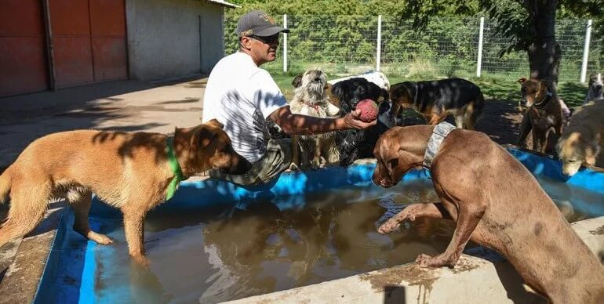
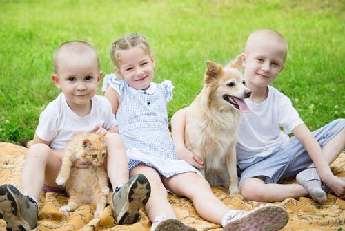
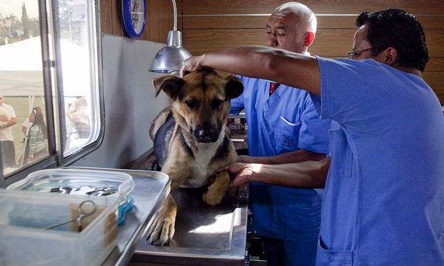
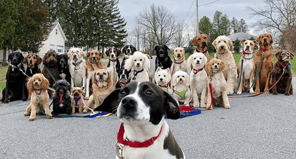

Servicios para Mascotas
HOSPEDAJE DE CALIDAD
¿Necesita hospedar a su perro o gato por un tiempo?
tenemos un servicio de hospedaje profesional, respaldado por personas que entienden y quieren a los animales.
COMO EN CASA |
Salud |
|---|---|
Hospedamos en espacios amplios. Durante el día los perros disfrutan de completa libertad en grupos homogéneos, mientras que los gatos estan en amplias gateras especialmente ambientadas con troncos y casas. Además, alimentamos a sus mascotas con la mejor marca Super Premium del mercado |
La salud de su mascota nos interesa. Ante cualquier urgencia, nos ocupamos de que reciba asistencia veterinaria y nos ponemos en contacto con usted. Como prevención, cumplimos con una estricta rutina para mantener la limpieza del lugar. |
Supervisión Permanente |
Traslados |
Su mascota es cuidada y vigilada con la misma dedicación que usted le da. De ser necesario, su mascota recibirá atención veterinaria, y toda atención necesaria. |
Retiramos y entregamos su mascota a domicilio con camionetas acondicionadas y personal capacitado. |
Limpieza |
Servicios Veterianrios |
Cuidamos la limpieza en forma permanente. Todos los huéspedes son bañados regularmente y antes de volver a casa (opcional). |
Traslado especializado de mascotas a la veterinaria de ser necesario, tanto desde nuestro hospedaje como desde el domicilio del cliente |
Refugio
Somos una familia que recibe en su casa animales discapacitados y abandonados, los cuida, los ayuda a recuperarse, y les encuentra un nuevo hogar.
En DogMar ademas rescatamos animales en SITUACIÓN DE CALLE. A los cuales, les brindamos el cuidado que necesitan, les damos atención veterinaria, amor, realizamos sus tratamientos, operaciones. Como también, les buscamos un hogar que los adopten y amen como merecen.
Para ellos DogMar significa volver a nacer y esa es nuestra misión, darles a los animales especiales una nueva vida.
DogMar
Adopción Responsable
La adopción es un noble acto en el cual le das la oportunidad a un animalito de poder contar con una familia que lo quiera y lo trate de la manera que merece, ya que además de ser seres especiales, son mascotas que terminarán siendo una parte muy esencial de tu vida.
Si bien el adoptar es algo que trae felicidad tanto para el animal como para el dueño, es una decisión que requiere muchísima responsabilidad, ya que al tratarse de un ser vivo, deberás brindarle no solamente todos los cuidados correspondientes, sino también convertirte en un ejemplo a seguir y en una persona que lo trate respetuosa y dignamente. Es por ello que aquí te dejamos las claves para una adopción responsable.
La mascota necesitará un período de adaptación para ir integrándose en el nuevo hogar y acostumbrándose a sus dueños. Un buen dueño se encargará de facilitarle ese proceso para que el perro deje atrás el miedo, las inseguridades o la falta de cariño que puedan tener tras haber sido abandonado y volver a estar contento y feliz.
Una adopción responsable implica deberes diarios con tu mascota que debes asumir durante toda su vida.
Para educarle correctamente necesitas paciencia e invertir tiempo en tu nuevo amigo. Conviene acostumbrarle a ciertas rutinas diarias como sacarle a la calle tres veces y a horas parecidas, o ponerle la comida en su cuenco en el mismo momento del día.
Hay que entender que nuestra mascota tiene necesidades que hay que cubrir. Hay que cuidar su alimentación, su higiene y mantener a raya vacunas y antipulgas. Además, debéis llevar juntos una vida vida activa, decicarle tiempo jugando con él y darle buenos paseos para que haga ejercicio. Aunque se le lleve atado por la ciudad es importante crear un ambiente libre para que el perro pueda correr y disfrutar por jardines o parques.
Además de divertirse, hay que enseñarle a estar tranquilo en casa cuando se quede solo. Si le das mimos a tu mascota te responderá con el mismo cariño.
Adriestramiento

Nos enfocamos en mejorar la comunicación y el vínculo de las familias con sus perros, quienes son parte de ellas, enriqueciendo así su calidad de vida.
Para esto, utilizamos técnicas y herramientas alineadas a la tenencia responsable, rechazando el maltrato animal, técnicas con aval científico sustentadas por nuestra experiencia, conocimientos y profesionalismo.
Entre los métodos utilizados por nuestro equipo se destacan el Adiestramiento Cognitivo-Emocional el Condicionamiento Operante, y el Condicionamiento Clásico.
Respetamos que cada perro es único y requiere un abordaje como tal y una correcta educación en base al vínculo saludable.
Requisitos Sanitarios para el ingreso de mascotas al predio
En DogMar privilegiamos la salud de nuestros huéspedes. Por ello, le pedimos que cumpla con estos requisitos sanitarios antes de confiarnos su mascota. Buscamos mantener los más altos estándares de salud en nuestro predio, para evitar contagios de enfermedades. Muchas gracias por su cooperación. Es en beneficio de todos.
Perros
- 🐶Vacunación completa (antirrábica y séxtuple anual).
- 🐶Traqueobronquitis infecciosa (vacuna opcional contra la Tos Seca).
- 🐶Libre de pulgas y garrapatas.
- 🐶Desparasitación interna
Gatos
- 🐱Vacuna antirrábica anual
- 🐱Triple felina anual
- 🐱Libre de pulgas y garrapatas
- 🐱Desparasitación interna
Importante
Si mascota no recibió la vacuna contra la Tos Seca, estará expuesto a contraer este virus; si lo contrajera durante su estadía en DogMar, deberá afrontar los gastos de tratamiento incurridos por nosotros para su tratamiento.La desparasitación interna deberá realizarse con la frecuencia que su veterinario le recomiende. Tenga en cuenta que, al estar su perro en contacto con otros, será necesario desparasitar con mayor frecuencia.
Consulte a su médico veterinario de confianza para cumplimentarlos
GRACIAS POR SU COLABORACIÓN
Accesorios: (colchones-mantas-juguetes)
DogMar hospeda a sus mascotas brindándoles todos los accesorios necesarios durante su estadía para su bienestar (colchones, mantas, juguetes etc). Según nuestra experiencia tanto perros como gatos, pueden prescindir de sus accesorios habituales, sin generarles esto una situación de stress adicional por sobre el hecho de cambiar de hábitat. El instinto de protección de sus pertenencias podría generar conflictos entre pares y queremos asegurarnos de evitarlos
Pulgas y garrapatas, cómo evitarlas
DogMar se encuentra libre de todo tipo de ectoparásitos ya que además de solicitar “Requisitos Sanitarios” para el ingreso de cualquier mascota, revisamos cada nuevo huésped. Tenemos estrictos controles sanitarios y en el caso de los perros, periódicamente realizamos baños sanitarios que previenen el contagio de las mismas.
¿Qué es la Tos Seca o “Traqueobronquitis Infecciosa”?
La “Tos Seca” puede ser comparada con una gripe o resfrío. Es de origen viral y se contagia por contacto aerógeno. No es algo grave pero como en algunas épocas del año hay brotes de Tos, nosotros siempre sugerimos el ingreso de perros vacunados contra este virus.
Mi mascota está algo decaída, la noto distinta
Cuando una mascota cambia de ambiente, puede pasar por un período de adaptación al nuevo lugar llamado “Estrés de cambio de ambiente”. Algunas pueden estar decaídas, comer menos de lo acostumbrado o bien pueden bajar sus defensas inmunológicas. En todos estos casos, procuramos que los nuevos huéspedes se sientan cómodos en el nuevo ambiente y que se adapten lo más rápido posible.
En el caso de los perros, el hecho de que estén en libertad y en contacto con otros pares ayuda a que se adapten con mayor rapidez. Hay que tener en cuenta que los perros son animales muy rutinarios. Si el período de hospedaje es largo, puede suceder que su mascota también tenga que adaptarse al hecho de dejar nuestro predio y volver a su hogar. De una u otra forma, si nota que su perro está distinto, en pocos días volverá a comportarse como siempre. De no ser así, no dude en consultar con su veterinario.
Los gatos son más susceptibles al stress por cambio de ambiente que los perros, ya que son más lentos en adaptarse a un nuevo ambiente. Para que logren una pronta adaptación, es conveniente que el sitio donde se hospede su gato tenga lugares pequeños con protección, de manera que puedan sentirse seguros al esconderse de lo desconocido. Nuestras gateras están especialmente ambientadas con casitas para que su gato pueda refugiarse. Las mismas están hechas a base de madera y tienen puerta y ventanas. Asimismo, las gateras tienen troncos para que su gato pueda jugar y divertirse cuando se adapte al lugar. Con esto nos aseguramos que su gato pase por el período de adaptación lo más rápido posible y que a la vez pueda divertirse.
Mi perro volvió más flaco
Como en DogMar los perros están en libertad, corren y juegan en grupos homogéneos, algunos perros pueden bajar de peso por hacer más ejercicio físico que el que acostumbra a hacer en su casa. Esto es normal y en la mayoría de los casos esperable. Asimismo, un perro también puede disminuir su apetito por el hecho de tener que adaptarse a un nuevo lugar. Para poder controlar que la reducción no sea excesiva, contamos con una balanza que nos permite pesar a cada mascota que ingresa al predio. Repetimos esto cuando su mascota se va. Asimismo, si notamos que no se está alimentando bien, procuramos buscar formas alternativas para que coma el alimento que le damos, como por ejemplo, mezclar el mismo con caldo, o agregarle un poco de carne picada. En estos casos, también controlamos su peso con mayor frecuencia.
Puede mi perro volver con algún raspón o alguna articulación marcadas
El servicio de hospedaje que ofrecemos es en libertad ya que consideramos que es la única forma de que los perros se diviertan y puedan disfrutar de su estadía con nosotros. En algunos casos, esto puede ocasionar algún raspón por el roce con el pasto, rama o con algún otro perro. Para su tranquilidad, tenemos personal capacitado que supervisa a los huéspedes de manera de minimizar cualquier incidente.
Mi mascota volvió con parásitos
Los perros y gatos normalmente conviven con una carga parasitológica que no manifiesta síntomas. El hecho de que su mascota cambie de ambiente, puede hacer que bajen sus defensas inmunológicas, lo cual puede provocar que los parásitos manifiesten en su perro sintomatologías tales como diarrea, pérdida de peso, lagañas, u otras. Para reducir esta posibilidad, solicitamos que todos los huéspedes sean desparasitados antes de ingresar al predio.
Mi mascota tiene una parte de su piel irritada (parche caliente)
Los "parches calientes" son una irritación de la piel que puede ser ocasionada por alergia. Producen picazón, suelen aparecer repentinamente y son de rápido crecimiento. El calor y la humedad potencian las posibilidades de que se produzcan estas irritaciones. Si esto es detectado en su inicio, puede ser tratado para evitar su progreso. De persistir, el parche debe ser medicado. En DogMar estamos atentos a la posibilidad de inicio de “parches calientes” y sabemos como tratarlos.
En el caso de los gatos, si bien la posibilidad existe, es algo remota ya que los gatos conviven en ambientes menos húmedos, donde no da tanto el sol y tienen pelo más corto.
Bichera o Miasis
Ante cualquier raspón o herida, por más leve que sea, o ante la presencia de sangre, pus o cualquier secreción orgánica, hay ciertas moscas que pueden posarse y colocar huevos; esto rápidamente genera una “bichera” con el crecimiento de larvas. En nuestro predio cuidamos al máximo las condiciones sanitarias del lugar para bajar la posibilidad de que estas moscas estén presentes usando desinfectantes para este fin. De cualquier manera, es importante saber que al tratarse de un predio al aire libre, no es posible erradicarlas. Para su tranquilidad, nuestro personal está capacitado no sólo para disminuir la posibilidad de que su mascota tenga una bichera, sino también para detectarlas, en cuyo caso, su mascota recibirá la asistencia veterinaria correspondiente.
Mas Información
Si Ud. tiene que viajar, realizar una obra en su casa, remodelar su jardín, tiene una fiesta o si su perra está en celo, puede contar con nuestro servicio de hospedaje profesional para perros y gatos.
Ventajas de este servicio:
- 🐾Contamos con amplias subdivisiones en las que armamos grupos homogéneos, minimizando el riesgo de peleas.
- 🐾Alimentamos con la mejor marca Súper Premium del mercado.
- 🐾Garantizamos supervisión las 24 horas con personal capacitado.
- 🐾Ante cualquier urgencia, nos ocupamos de que su mascota reciba la asistencia veterinaria que necesita.
- 🐾Cuidamos la limpieza de nuestros huéspedes e instalaciones en forma permanente.
- 🐾Tenemos camionetas acondicionadas y personal capacitado para retirar y entregar a su perro o gato a domicilio.
Visitenos y recorra nuestras instalaciones!
Lo invitamos a conocer DogMar de lunes a domingo de 8 a 18 horas. Puede visitarnos en el momento que guste y sin previo aviso. Para nosotros es muy importante que UD. nos conozca personalmente y aprecie la forma en que trabajamos.
¿En qué consiste su servicio de hospedaje?
En DogMar tenemos un servicio profesional de hospedaje para perros y gatos, brindado por personas que entienden y quieren a los animales. Los perros están en completa libertad para que se sientan tan cómodos como en casa, pudiendo disfrutar con pares de nuestro predio, recibiendo el cuidado profesional que se merecen. Por otro lado, contamos con amplias gateras especialmente ambientadas con troncos y casas para albergar a estos pequeños huéspedes.
¿Cómo es el lugar donde hospedaré a mi mascota?
Nuestro predio se encuentra ubicado en Pilar. Tiene una superficie de 6000 m2 y está preparado tanto para días calurosos, como para los días lluviosos. Contamos con una gran arboleda y una pileta de poca profundidad para los días calurosos, como así también zonas techadas para los días lluviosos. Por otro lado, tenemos amplias gateras especialmente ambientadas con troncos y casas para que su gato disfrute al máximo de su estadía.
En DogMar, contamos con supervisión permanente a cargo de personal entrenado y ante cualquier urgencia, nos ocupamos de que su mascota reciba la asistencia veterinaria que necesita.
Quiero hospedar a mi perro y a mi gato en un lugar lindo y seguro para que disfrute su estadía, pero tengo temor de que el lugar no sea adecuado para el cuidado de mascotas...
Nuestra gran diferencia es que tenemos como prioridad principal a que su perro o gato pase una estadía segura y también feliz. Por eso, durante el día los perros están en completa libertad y por la noche duermen en espacios confortables, amplios y limpios. Y los gatos disfrutan de un amplio sector cerrado y apartado de los perros, especialmente ambientado.
Nuestras instalaciones tienen una superficie de 6000 m2 compuesta por amplias subdivisiones comunicables entre sí, que nos permiten formar grupos homogéneos de perros, minimizando el riesgo de peleas.
¿Cómo duermen los perros?
Su perro dormirá tan cómodo como en casa. Las zonas donde duermen son techadas y contienen mantas para que su mascota duerma confortablemente y sin riesgos de raspaduras.
¿Qué les dan de comer?
Todos nuestros huéspedes son cuidados como en casa. Los alimentamos con la mejor marca Súper Premium del mercado.
¿Qué pasa cuando llueve?
Estamos preparados para afrontar los días lluviosos. Contamos con zonas techadas para resguardar a nuestros huéspedes.
¿Tienen asistencia veterinaria en caso de emergencias?
En DogMar le damos una gran importancia a la salud de todos nuestros huéspedes, por lo que disponemos de supervisión en forma permanente y ante cualquier urgencia, nos ocupamos de que su mascota reciba la asistencia veterinaria que necesite
¿Cuentan con algún tipo de supervisión para que mi mascota esté cuidada?
Su mascota estará en buenas manos. Estamos en esta actividad desde 2016 y contamos con personal capacitado que supervisa las 24 hs. Conocemos y aplicamos todos los mejores cuidados para minimizar los riesgos de peleas o incidentes.
¿Puedo ir a visitarlos para ver en qué condiciones tienen el lugar?
Por supuesto, será bienvenido de lunes a domingo de 8 a 18 horas. Puede visitarnos en el momento que guste y sin previo aviso. Para nosotros es muy importante que Ud. nos conozca personalmente y aprecie la forma en que trabajamos. Para obtener un mapa de acceso, clickee aquí